Березовский всю жизнь доказывал, что поздний старт не определяет предел человека. Он пришел в футбол позже других — и оставил его человеком, после которого другие начали верить раньше.

719
505
134
Футбольные клубы в которых играл футболист

Командные трофеи, которые выигрывают вместе со своими профессиональными клубами в течение ежегодного сезона


Награды, завоевываемые игроками в составе национальных сборных

Вручаются за выдающиеся личные результаты, статистику и мастерство


За карьеру он нанес в общей сложности 2525 ударовпо воротам (в среднем адекватные 3.5 удара за игру). Каждый 5-й его удар завершался взятием ворот, что является элитным показателем для вингера
Для флангового игрока это всокий показатель (у обычных топ-вингеров он в районе 15–18%)
Из 2525 его ударов ровно 1212 пришлись в створ ворот (остальные ушли мимо, выше или были заблокированы защитниками). Почти половина попыток заставляла вратарей вступать в игру
Процент ударов, которые летят строго в створ ворот, а не мимо или в защитников
В среднем шел в обыгрыш 5 раз (всего около 3600 попыток за карьеру). Благодаря приему «смена ритма», когда защитники улетали в сторону по инерции, почти 2300 обыгрышей завершились успешно. Для игрока габаритами (189 см, 87 кг) это аномально высокий показатель в современном футболе
Фланговый инсайд, который постоянно рискует, обостряет и закручивает мячи в штрафную. Точность выше 80% у чужих ворот доказывает его высокий интеллект и чтение игры. Он не делал «пустых» навесов в никуда
 95
95
 98
98
 96
96
 92
92
 86
86
 89
89
Стабильная карьера на высшем уровне (15+ лет)
Критический - присутствие игрока на поле требует стягивание минимум двух центральных защитников
Рыночная стоимость (на пике) €122,000,000
Березовский всю жизнь доказывал, что поздний старт не определяет предел человека. Он пришел в футбол позже других — и оставил его человеком, после которого другие начали верить раньше.
История Эрнеста Березовского не похожа на большинство футбольных биографий. В ней не было мяча с первых шагов, бесконечных детских турниров или рассказов о мальчике, который с раннего возраста был уверен, что однажды станет профессиональным футболистом. Ему больше говорили, что он опоздал. Первые годы жизни Эрнест провел рядом с бабушкой и дедушкой в Крыму. Именно их дом долгое время был для него главным местом детства — тихим, привычным и устойчивым миром, в котором он много времени проводил за книгами и рано привык занимать себя самостоятельно.
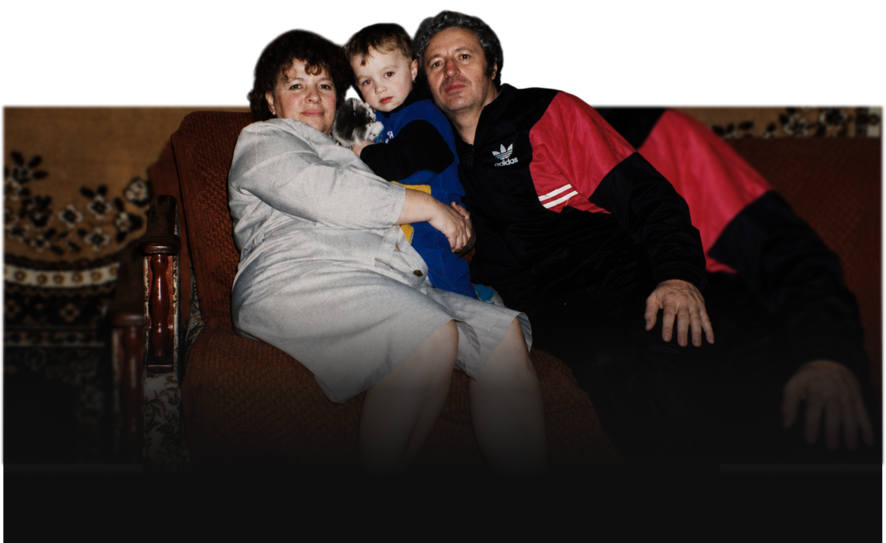
Позже мать забрала Эрнеста жить к себе в Москву. Переезд стал первым большим изменением в его жизни: другой дом, другой ритм, новые люди и необходимость заново привыкать к окружающему миру. Он пришел в футбол не тогда, когда будущих звезд уже водят по академиям и учат первым движениям с мячом. Он начал поздно, не имел той базы, которая была у других, не выглядел мальчиком, которому заранее уготовано большое будущее. Вокруг него всегда находились люди, готовые объяснить, почему не получится. Почему время упущено. Почему поезд уже ушел и невозможно за несколько лет догнать тех, кто занимается с раннего детства.
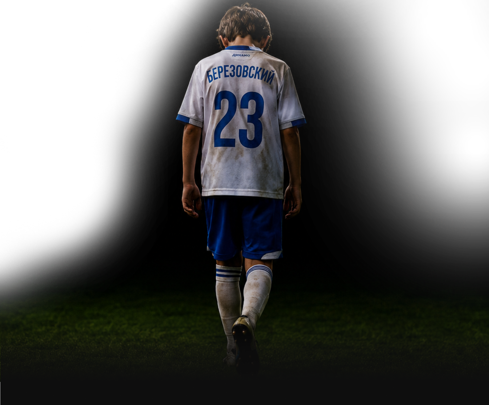
Березовский слышал это много раз. И каждый раз отвечал одинаково — работой. Вместе с Иваном Кузнецовым он начинал почти с нуля. Они тренировались тогда, когда другие уже имели годы подготовки, разбирали собственные ошибки, возвращались к одним и тем же упражнениям снова и снова и постепенно сокращали ту дистанцию, которая вначале казалась непреодолимой. Для Эрнеста это стало первым важным уроком: не все в жизни можно получить вовремя, но иногда можно прийти позже и все равно добиться своего.
Эта борьба потом будет сопровождать его всю карьеру. Когда он получит тяжелую травму — будут сомневаться, сможет ли он вернуться прежним. Когда окажется в одном из сильнейших клубов мира — будут спрашивать, соответствует ли он этому уровню. Когда станет одним из лидеров поколения — найдутся те, кто скажет, что клубные успехи ничего не значат, пока сборная России продолжает оставаться командой, от которой никто всерьез не ждет величия. Именно поэтому победа на чемпионате мира стала для Березовского чем-то гораздо большим, чем главным трофеем в карьере. Она стала окончательным ответом на все прежние сомнения ибо Россия стала чемпионом мира по футболу.
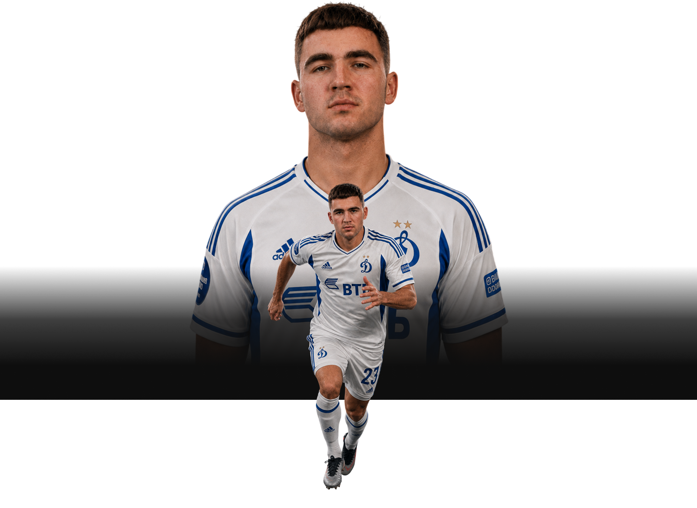
Переход в основной состав «Динамо» стал для Березовского и Кузнецова первым доказательством того, что годы, потраченные на попытку догнать тех, кто начал заниматься футболом гораздо раньше, не были напрасными. Эрнест быстро закрепился в команде, и вместе с Иваном они стали частью одного из лучших периодов в истории клуба. «Динамо» выиграло чемпионат России и Кубок России, а затем впервые по-настоящему заявило о себе в Европе. Для Березовского эти победы имели особую цену: еще совсем недавно ему объясняли, что в тринадцать лет начинать профессиональный футбол слишком поздно, а теперь он поднимал трофеи в форме клуба, в академию которого когда-то с трудом пытался попасть. Но самым большим испытанием оказался именно тот сезон, который должен был стать главным. Во время важнейшего отрезка Лиги чемпионов Эрнест получил тяжелую травму левой ноги. Повреждение потребовало операции, и он был вынужден пропустить решающие матчи, пока «Динамо» совершало свой сенсационный европейский поход и дошло до полуфинала турнира, где их в следвии выбили.
Позднее Березовский признавался, что переживал тот период тяжелее многих поражений на поле. Он смотрел, как команда, с которой они вместе прошли путь от молодежного футбола до чемпионства, играет крупнейшие матчи своей истории, а сам ничего не мог сделать. Эрнест злился прежде всего на себя — даже понимая, что травму невозможно было исправить дополнительными часами тренировок. Операцию и восстановление он проходил в Барселоне, и именно там поражение неожиданно открыло перед ним следующую дверь. Знакомство с Лионелем Месси привело сначала к приглашению на тренировку «Барселоны», куда вскоре прилетел и Кузнецов, а затем — к началу их каталонской главы. Так период в «Динамо» закончился для Березовского не идеальным триумфом, а болезненным уроком: иногда дорога вперед открывается именно тогда, когда кажется, что все, ради чего ты работал, внезапно остановилось.
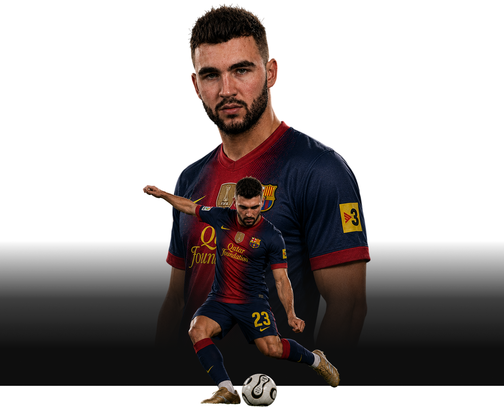
Эрнест Березовский в Барселону вернулся уже в качестве одного из самых востребованных футболистов Европы, в этом было что-то почти символическое. Город, где он когда-то заново учился нормально двигаться после операции, теперь встречал его как игрока, за которого «Барселона» заплатила €85 миллионов. Вместе с ним в Каталонию перебрался Иван Кузнецов — человек, с которым Эрнест когда-то сидел за одним столом в московской библиотеке и впервые всерьез говорил о профессиональном футболе. Испанская пресса встретила трансфер настороженно. Березовский казался слишком крупным для привычного образа крайнего атакующего игрока «Барселоны». Некоторые аналитики сомневались, сможет ли футболист, выросший в более силовой среде, существовать внутри игры, построенной на коротких передачах, постоянном движении и моментальном принятии решений. Сам Эрнест почти никогда не отвечал на подобные разговоры. Он вообще не любил объяснять, каким футболистом является. Предпочитал показывать.
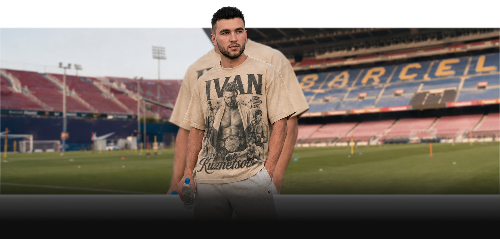
Довольно быстро стало понятно, что его габариты не мешают комбинационному футболу. Наоборот, они давали ему возможность играть иначе. Березовский мог удержать мяч под давлением, пройти внутрь поля, завершить атаку, сыграть на партнера или первым вступить в прессинг после потери. «Брейк-даун» стал известен всей Испании. Защитники изучали его на видео. Знали, в какой момент он обычно замедляется. Понимали, чего следует ожидать. И все равно ошибались. Но сам Березовский никогда не считал этот прием главным доказательством собственного мастерства. Гораздо выше красивого обыгрыша он ставил правильное решение. Если вместо прохода нужно было вернуть мяч назад — возвращал. Если партнер находился в лучшей позиции — отдавал передачу. Если требовалось весь матч работать без мяча — делал это.
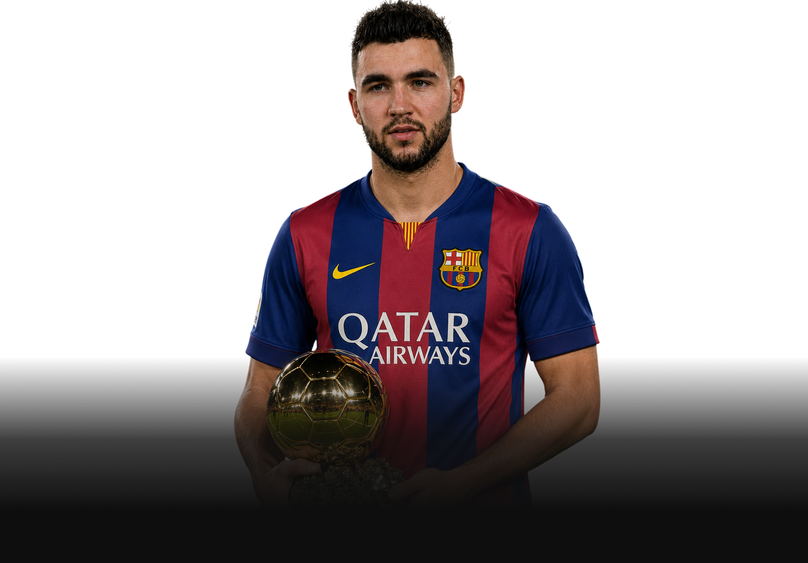
Именно поэтому он оказался настолько органичен в «Барселоне». Постепенно левый фланг перестал быть для него конкретной точкой на поле. Эрнест смещался внутрь, опускался глубже, появлялся возле штрафной и постоянно менял позиции с партнерами. Его влияние становилось все заметнее, но сам он никогда не стремился превратить это влияние в особый статус внутри команды. В раздевалке Березовского ценили совсем не за цифры. Он уважал старших, спокойно относился к появлению молодых футболистов и тяжело переживал уход людей, с которыми успевал сблизиться. Когда клуб начали покидать футболисты, ставшие частью привычной ему команды, Эрнест впервые публично позволил себе показать, насколько сильно воспринимает коллектив через человеческие отношения: «Я очень шокирован этой трансферной политикой. Вилья и Пике — мои друзья. Особенно Алексис. Он говорил, что счастлив в “Барселоне”. Да, у него были сложности с адаптацией, но он всегда помогал команде именно тогда, когда это было нужнее всего. Но, думаю, всё, что происходит, происходит к лучшему. Мы подружимся с новыми ребятами, и начнётся новая эра».
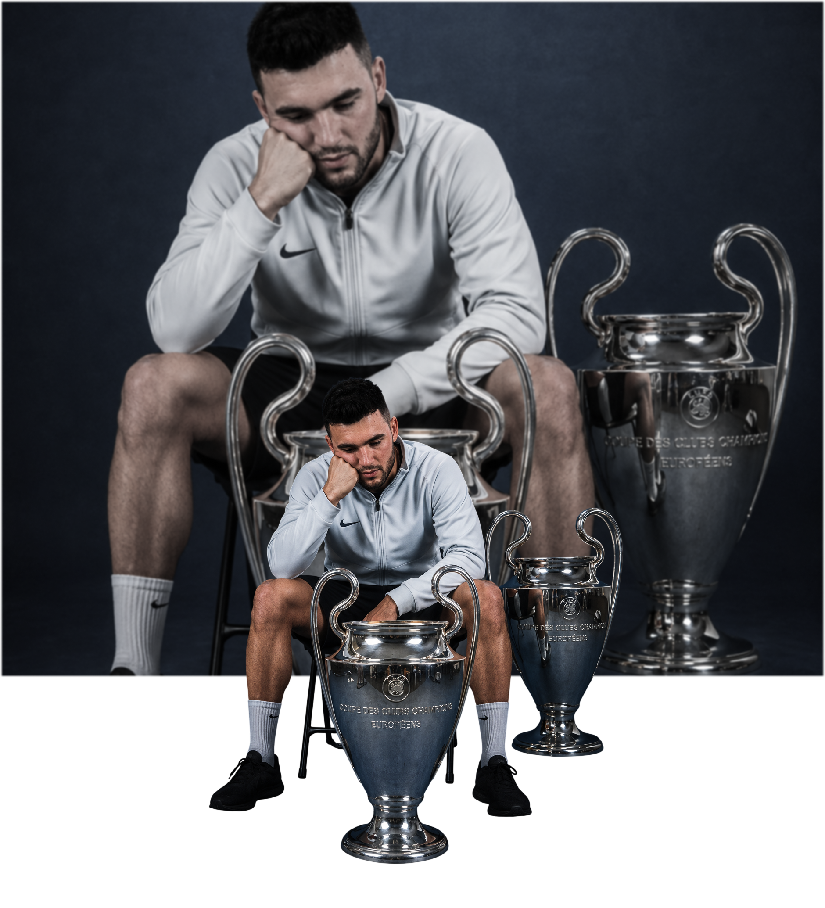
Для Березовского клуб никогда не был только работодателем. Он привязывался к людям, а потому каждое изменение переживал гораздо тяжелее, чем показывал публично. И именно поэтому решение уйти удивило многих. После матча Лиги чемпионов против «Лиона» Березовский объявил, что не станет продлевать контракт. Он по-прежнему находился среди лидеров команды и не был вытеснен из состава. Его никто не просил уходить. Решение принадлежало только ему.
«Думаю, моё время в “Барселоне” подошло к концу. Возможно, это звучит странно, потому что сейчас я играю в хороший футбол. Но это моё решение. “Барселона” — мой родной дом. Этот клуб дал мне всё, о чём я мечтал. Семь лет на “Камп Ноу” сделали меня счастливым. Но быть одним из лидеров такого клуба столько времени — огромная ответственность. Она утомляет не только физически, но и морально. Я доиграю сезон до конца и отдам команде всё, что у меня осталось».
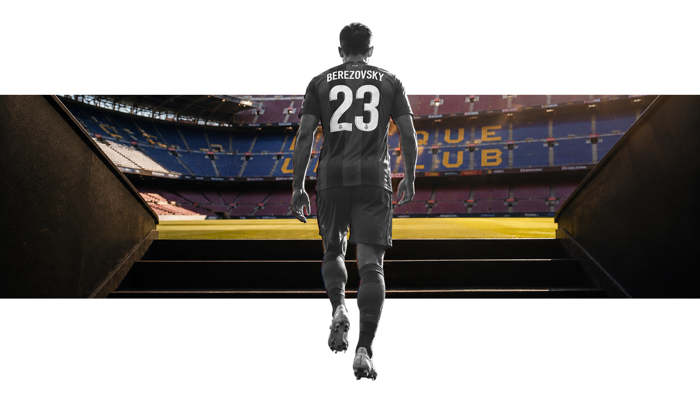
Это был редкий случай, когда Березовский открыто сказал об усталости. Не физической — от нее профессиональный спортсмен привык восстанавливаться. А от необходимости годами соответствовать статусу человека, от которого всегда ждут решения. Он уходил не потому, что перестал любить «Барселону». Возможно, именно потому, что продолжал ее любить. В последнем матче на «Камп Ноу» трибуны провожали человека, который когда-то оказался в этом городе травмированным молодым футболистом, не зная, вернется ли полностью к прежней жизни. Спустя годы он уходил оттуда одним из символов целой эпохи.
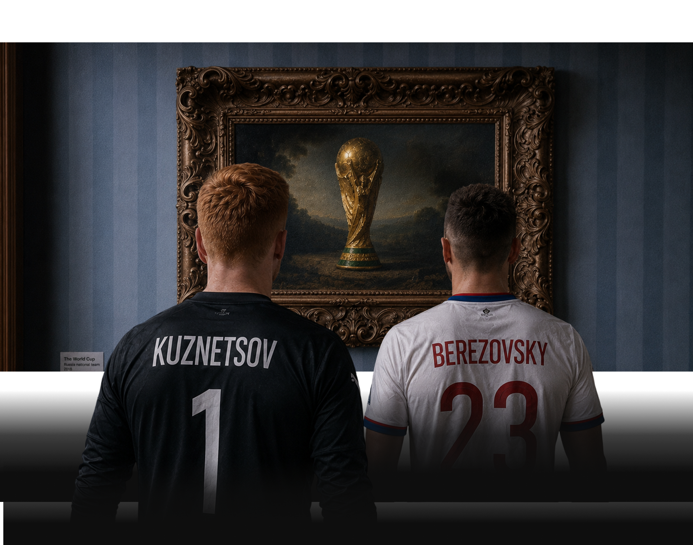
К тому моменту Эрнест Березовский уже давно не нуждался в представлении. Он выигрывал крупнейшие клубные турниры, играл рядом с величайшими футболистами своего поколения и считался одним из лучших игроков мира. Рядом с ним был Иван Кузнецов — человек, с которым когда-то начиналась вся эта история. Но существовало место, где ни клубные титулы, ни индивидуальные награды не могли защитить их от сомнений. Сборная России. От нее давно привыкли ждать меньше, чем от отдельных российских футболистов.
Вокруг национальной команды годами существовало странное сочетание надежды и насмешки. Перед крупными турнирами люди говорили, что верят, а затем сами же шутили о будущем поражении. Каждая неудача превращалась в подтверждение старой мысли:
большие клубы могут купить российских звезд, но изменить судьбу российского футбола невозможно.
Особенно тяжело это давление ложилось на Березовского и Кузнецова. Когда два футболиста получают огромные контракты, выигрывают титулы за границей и входят в число самых известных игроков мира, страна перестает воспринимать их как обычных членов команды. От них начинают требовать невозможного. В прессе регулярно звучал один и тот же вопрос:
если вы действительно настолько велики, почему сборная до сих пор ничего не выиграла? Не имело значения, насколько несправедливым был этот вопрос. В футболе такого уровня справедливость вообще редко кого интересовала.
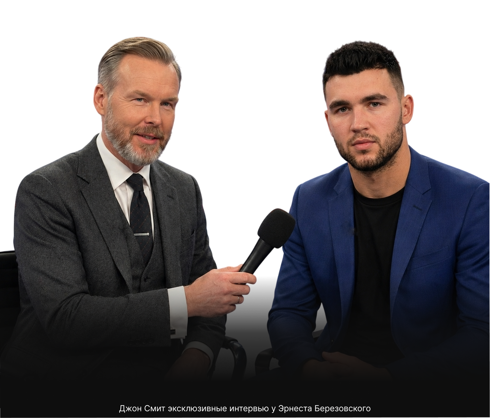
Березовский почти никогда не отвечал. Он понимал другое. Где-то возле старого московского стадиона мальчишки спорили, кто сегодня будет играть «за Березовского». Кто-то пытался повторить его остановку на фланге. Кто-то выбирал номер Кузнецова. Они еще не знали статистики, не понимали трансферной стоимости игроков и не читали колонок спортивных журналистов. Они просто ждали чуда. И, возможно, именно поэтому тот чемпионат мира впоследствии невозможно было объяснить только футболом.
С каждым новым этапом турнира менялось настроение целой страны. Шуток становилось меньше. Разговоров — больше. Матчи начинали смотреть люди, которые годами утверждали, что российский футбол их больше не интересует. В окнах появлялись флаги. Незнакомые люди обсуждали состав в метро. Дети выходили во дворы сразу после финального свистка и пытались повторить увиденное несколькими минутами раньше. В какой-то момент произошло самое непривычное. Люди перестали ждать поражения. Они начали ждать победы.
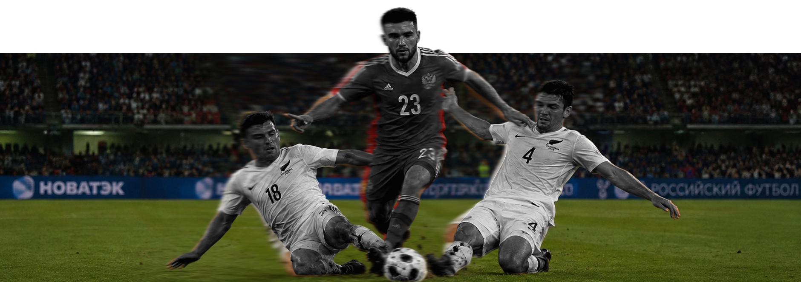
Для поколения, выросшего с убеждением, что сборная обязательно остановится где-нибудь перед самой вершиной, это было почти новым ощущением. Березовский позднее говорил, что именно тогда впервые понял разницу между победой за клуб и победой за страну. После клубного финала счастлив город, стадион, несколько миллионов болельщиков. После матча сборной казалось, что одновременно просыпается вся страна. Чем ближе становился финал, тем сильнее становилось давление. Теперь от Березовского и Кузнецова уже не требовали просто хорошей игры. От них ждали события, которое многие считали невозможным. И когда все закончилось, первым чувством была даже не радость. Было недоверие.
Россия стала чемпионом мира по футболу. Несколько секунд после финального свистка Березовский просто стоял на поле. Человек, который обычно первым понимал, что происходит вокруг него, словно сам не успевал осознать случившееся. Потом начался шум. Партнеры. Трибуны. Флаги. Люди на улицах за тысячи километров от стадиона. Следующие несколько дней превратились в редкий момент, когда футбол перестал принадлежать футболу. О победе говорили везде. Люди, никогда не смотревшие чемпионат целиком, знали имена игроков. Старые фотографии сборной появлялись рядом с фотографиями нового поколения. Детские школы получили наплыв мальчишек, которые впервые просили родителей отвести их на тренировку.
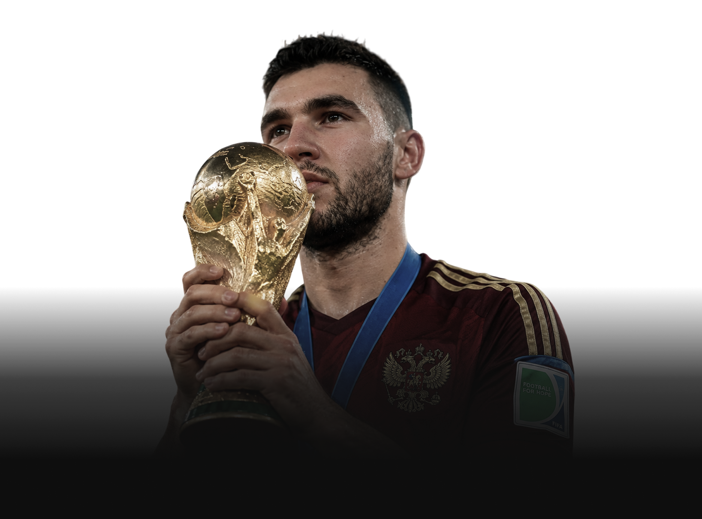
Березовский и Кузнецов перестали быть просто двумя великими российскими футболистами, добившимися успеха за границей. Они стали доказательством того, что история, над которой привыкли смеяться, однажды действительно может измениться. Именно поэтому спустя годы чемпионство вспоминали не только по голам или отдельным эпизодам. Люди помнили, где находились в тот вечер. Кто смотрел матч рядом. Кому позвонил после финального свистка. Как кто-то выбежал на улицу. Как незнакомые люди обнимались. Как дети еще долго не хотели расходиться по домам. Так рождаются события, которые становятся больше результата. Березовский впоследствии выиграет еще множество трофеев. Его имя будет связано с «Барселоной», «Ромой» и другими великими страницами собственной карьеры. Но чемпионат мира останется другим. Потому что большинство его побед принадлежали ему и его командам. Эта победа на короткое время принадлежала всем.
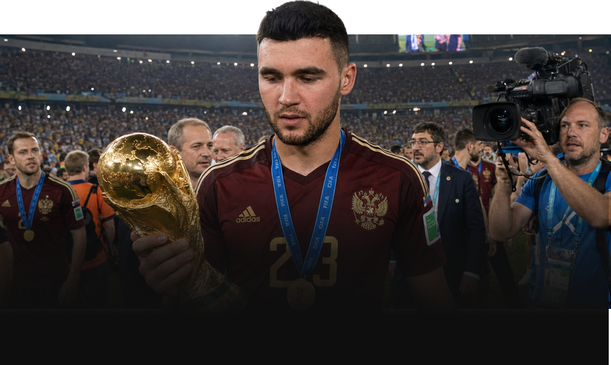
И, возможно, именно тогда исполнилась самая странная часть истории мальчика, который когда-то сидел в московской библиотеке и читал о великих футбольных поколениях прошлого. Теперь где-то другие дети открывали журнал уже с его фотографией на обложке. Не спрашивая, возможно ли такое еще раз. А зная, что однажды это уже произошло.
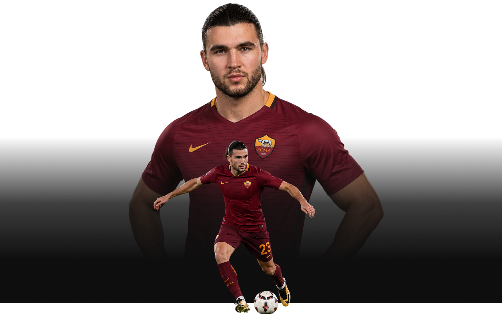
После Испании Березовскому больше не требовалось доказывать, что он способен играть за великий клуб. Но ему оставалось доказать кое-что самому себе. Эрнест выбрал чемпионат, который практически противопоставлялся всему, к чему он привык в Каталонии. Серия А требовала терпения, силовой борьбы, игры в ограниченном пространстве и постоянного противостояния с организованной обороной. За €112 миллионов он перешел в римскую «Рому». Для одних этот трансфер выглядел последним большим контрактом футболиста, уже выигравшего почти все. Для самого Березовского — возможностью снова почувствовать себя человеком, который должен чему-то учиться.
В Италии его футбол действительно изменился. Возраст постепенно забирал возможность постоянно повторять длинные рывки, и Эрнест не пытался соревноваться со временем. Вместо этого он стал чаще опускаться в глубину, принимать участие в построении атак и гораздо больше управлять игрой через передачи и выбор позиции. Тот самый футболист, который когда-то учился останавливаться перед защитником, теперь научился замедлять и ускорять уже целые матчи. Серия А оказалась тяжелой. Здесь ему приходилось принимать мяч спиной к воротам, выдерживать контакт и гораздо дольше искать момент для решающего действия. Именно в Риме окончательно проявилось то, что сопровождало Березовского всю карьеру: он никогда не пытался сохранить прежнюю версию самого себя. Если футбол требовал изменений — он менялся. За три сезона он забил 95 мячей и отдал 55 результативных передач. Вместе с «Ромой» выиграл долгожданное Скудетто, получил Golden Foot и премию Ференца Пушкаша. Но позднее, говоря о Риме, Березовский почти никогда не начинал разговор с этих цифр. Он говорил о том, что впервые за многие годы снова чувствовал себя новичком. Человеком, которому никто ничего не обязан. И, возможно, именно поэтому период в Италии стал для него одним из самых личных.
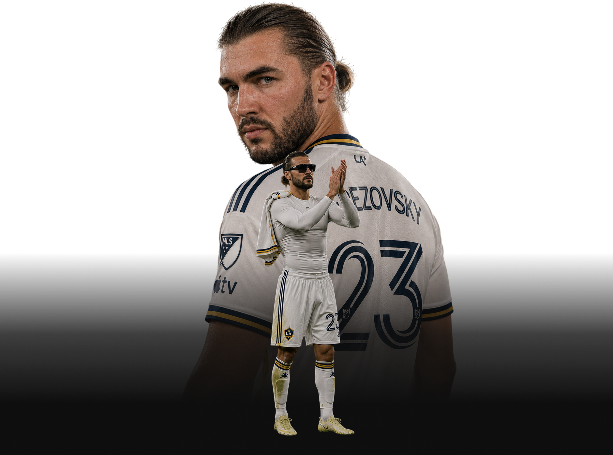
Березовский мог закончить карьеру. Главные трофеи были выиграны. Европа знала его имя. Организм уже требовал значительно больше времени для восстановления, а каждое новое межсезонье становилось тяжелее предыдущего. Но он выбрал еще одну главу. «Лос-Анджелес Гэлакси». Америка встретила его как большую европейскую звезду. Однако сам Эрнест довольно быстро дал понять, что приехал не проводить прощальное турне. Просто теперь его роль окончательно изменилась. На фланге появлялись футболисты моложе и быстрее. Березовский все чаще действовал в роли ложной девятки, опускался между линиями и превращался скорее в организатора атак, чем в человека, который должен обязательно завершать их сам. То, что раньше измерялось количеством обыгранных защитников, теперь проявлялось в другом: насколько свободнее становилось партнеру после его движения, насколько быстрее команда находила пространство, насколько спокойнее молодой игрок чувствовал себя рядом с ним. В Лос-Анджелесе вокруг Эрнеста постепенно сформировалась новая роль. Наставника. Он никогда официально не называл себя им. Не устраивал долгих речей в раздевалке и не пытался учить всех жить. Но молодые футболисты постоянно оставались с ним после тренировок. Спрашивали о движении без мяча. О давлении. О том, как пережить плохой матч. О том, как не потерять себя, когда тебя начинают узнавать на улице. И, вероятно, именно здесь Березовский впервые начал отдавать футбол так же естественно, как когда-то получил его от других. Его статистика в MLS осталась исключительной: 100 матчей, 80 голов и 90 результативных передач. Дважды он получал Landon Donovan MVP Award, а «Гэлакси» за три сезона трижды выигрывал Кубок MLS. Но цифры уже не определяли смысл этого периода. В молодости Березовский хотел доказать, что достоин находиться среди лучших. В Барселоне он понял, что значит быть одним из лучших. В Риме проверил, способен ли начать заново. А в Лос-Анджелесе впервые перестал задавать себе вопрос, что еще должен доказать.

«Березовский не просто выиграл своё место в истории — он заставил целое поколение поверить, что невозможное иногда лишь вопрос времени.»- Джон Смит
Последний матч оказался 719-м в профессиональной карьере Эрнеста Березовского. О своем решении он сообщил заранее. Без большого фильма. Без специальной пресс-конференции. Без попытки превратить уход в отдельное представление. Он просто сказал, что чувствует: время пришло. После финального свистка Березовский некоторое время оставался на поле. Партнеры подошли первыми, затем подняли его на плечи. Трибуны скандировали фамилию человека, который приехал в Америку звездой европейского футбола, а теперь уходил уже частью истории клуба. Эрнест почти ничего не говорил, он снял футболку одел черные очки, он не хотел чтобы видели его слезы... во время аплодисментов болельщикам, с его плеча соскользнула футболка и упала на поле. Он посмотрел на нее некоторое время, поднял и ушел. Возможно, потому что самые важные вещи в его жизни редко начинались со слов. Когда-то все началось с двух мальчишек в московской библиотеке. Они сидели среди старых журналов, читали биографии футболистов прошлого и пытались представить, каково это — однажды стать частью такой истории. Тогда Березовский еще не умел по-настоящему играть в футбол. Он просто любил читать о тех, кто умел. Спустя десятилетия его собственная карьера была закончена. Последний матч сыгран. Последняя передача отдана. Цифры больше никогда не изменятся. Но именно здесь заканчивается только спортивная часть его истории. Потому что где-то другой мальчишка однажды откроет старую фотографию, увидит высокого футболиста в форме «Динамо», «Барселоны», «Ромы» или «Лос-Анджелес Гэлакси» и захочет узнать, кем был этот человек. Так же, как когда-то хотел узнать сам Эрнест. Он начинал с истории футбола.А закончил тем, что стал одной из ее глав.
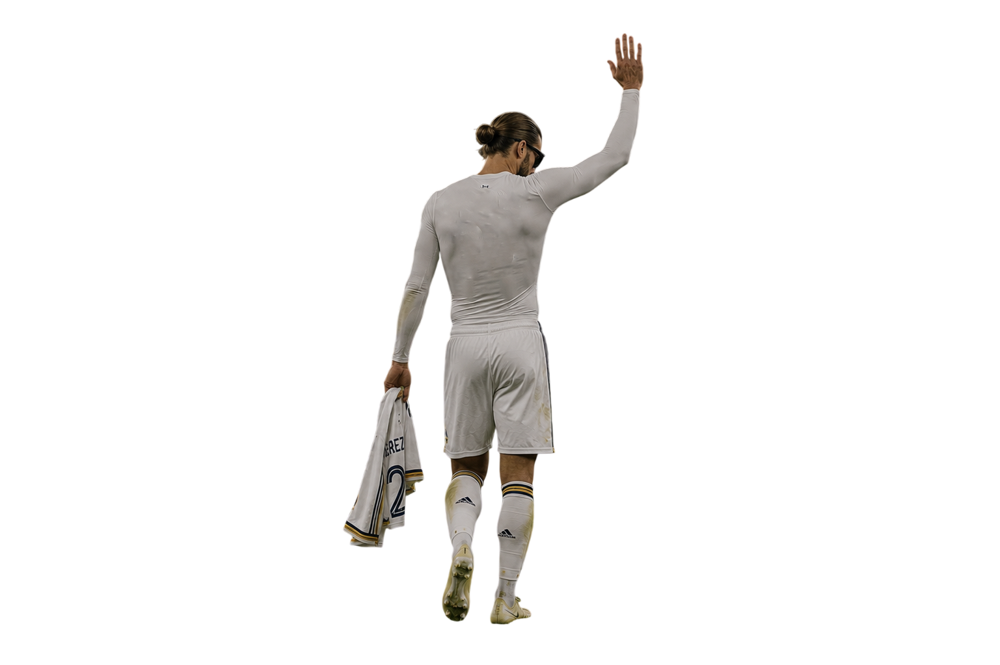